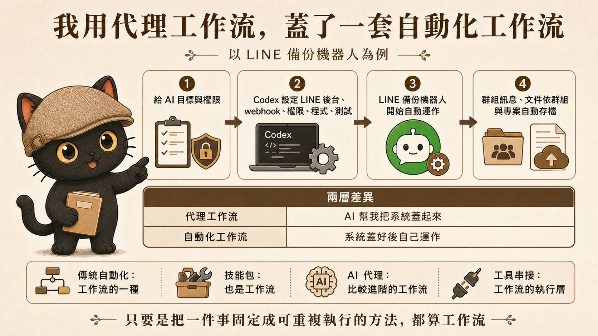
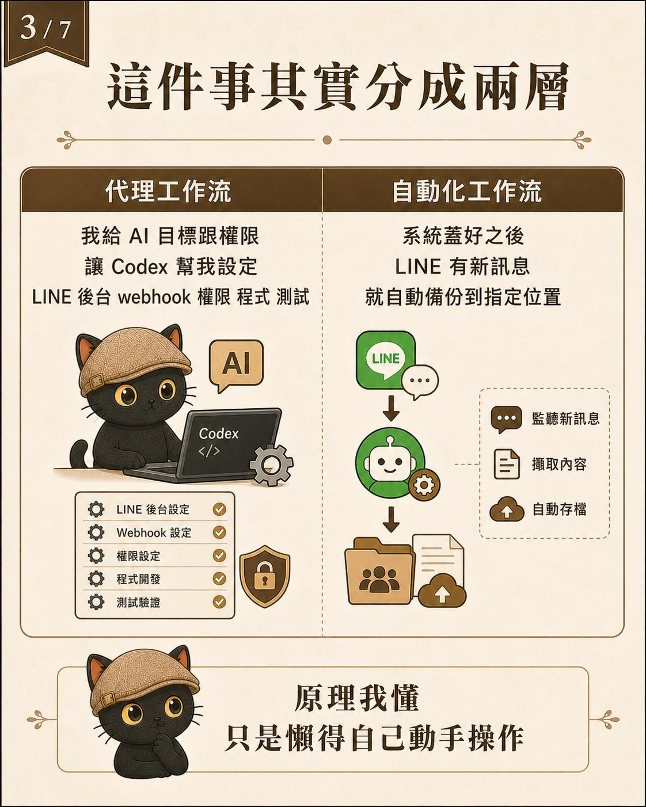
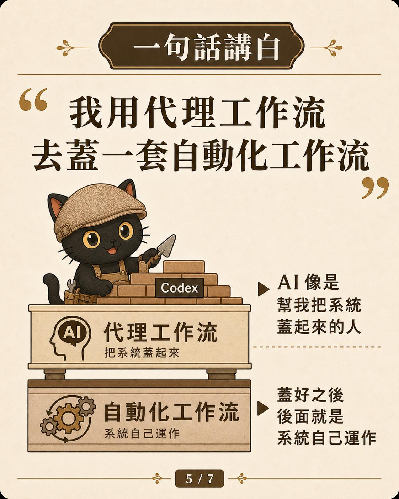
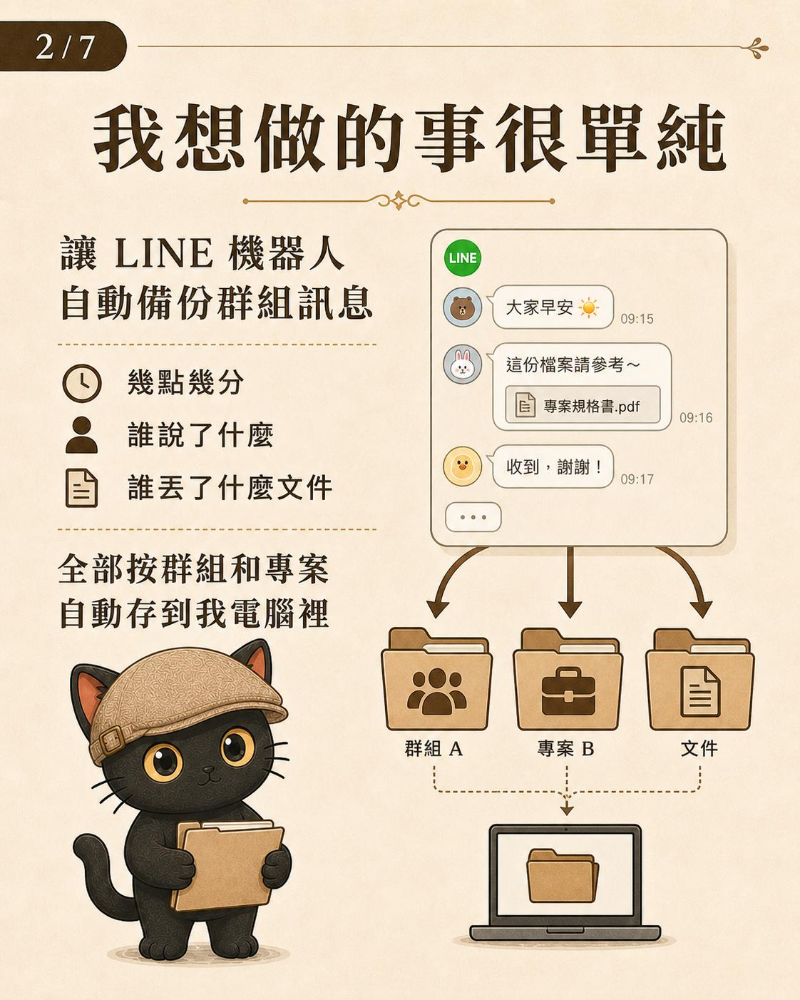
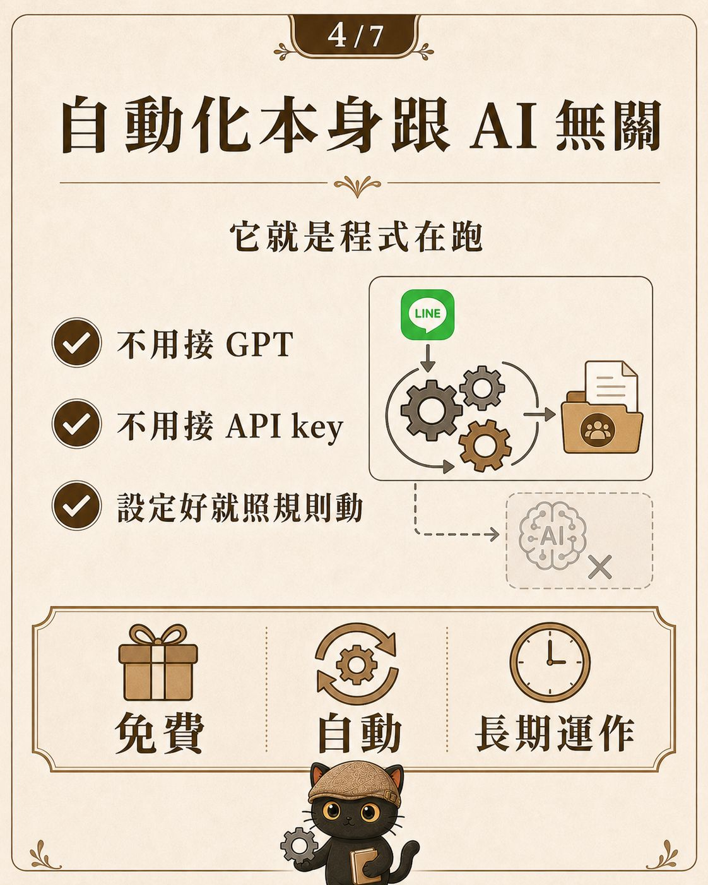
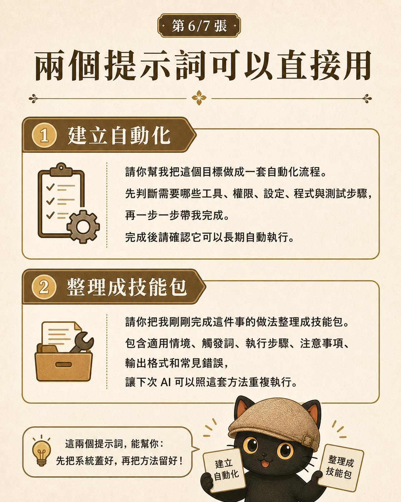
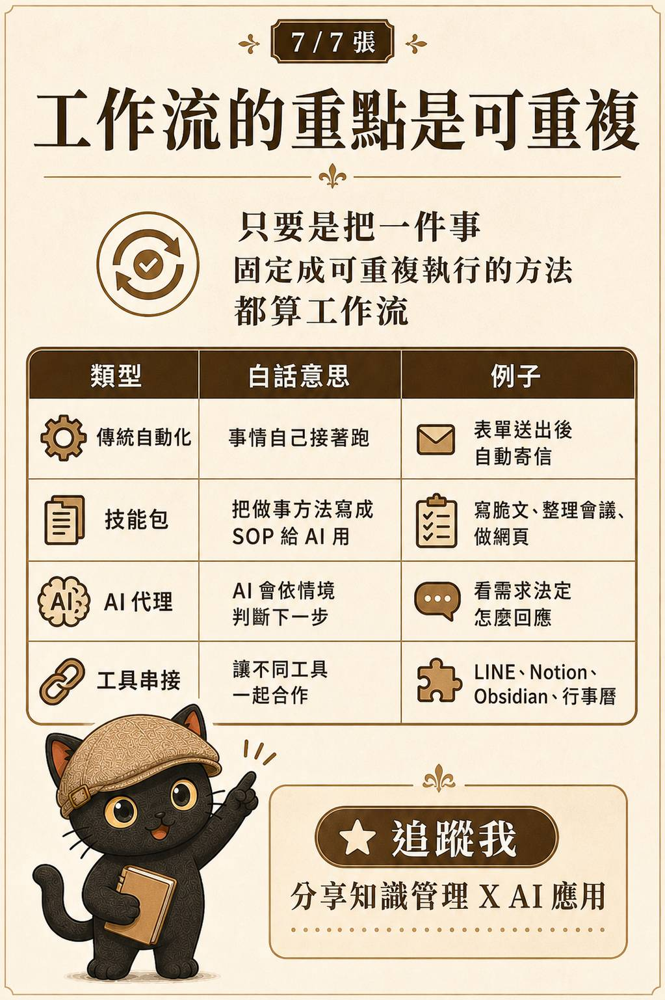

這篇在講什麼
把「AI 自動化」拆成兩個概念：Agent 工作流幫你把流程建起來，程式自動化工作流建好之後自己跑。用 Codex 設定 LINE 備份機器人當例子，告訴你哪一段交給 AI、哪一段交給程式。
· 想用 AI 把重複工作變成會自己跑的流程，卻分不清 AI 與程式各自負責哪一段的人
· 搞不清楚「AI 自動化」到底是 AI 在跑、還是程式在跑的人
· 一人公司、自由工作者，想讓 AI 真的接手流程的人
· 看懂 Agent 工作流與程式自動化工作流兩個概念怎麼分工
· 一個判斷準則：哪一段交給 AI、哪一段交給程式
· 一個實際案例：用 Codex 把 LINE 備份機器人從零設好

先分清楚兩個概念
很多人講自動化會混在一起講。我習慣分成兩個概念：Agent 工作流負責把流程建起來，程式自動化工作流負責建好之後自己跑。兩邊需要的東西其實不一樣。
Agent 工作流
把一個流程從無到有生出來：要接什麼、規則怎麼定、怎麼測試。這一段我交給 Agent，需要的是判斷與設定。
程式自動化工作流
流程設定好之後，就是程式自己照規則跑。這一段不需要每次有人盯，也不一定跟 AI 有關。


一個實際例子：LINE 備份機器人
像我最近用 Codex 幫我設定 LINE 機器人，目標很單純：群組裡幾點幾分、誰說了什麼、誰丟了什麼檔案，都依照群組和專案，自動備份到電腦裡。

這個 LINE 備份機器人設定好之後，其實就是程式自己在跑：
這一段是程式自動化，跟 AI 沒有直接關係，也不一定需要 GPT 的 API key。它就是照著設定好的規則，一直跑下去。
那 AI 出現在哪裡？
AI 出現在前面建立流程的階段。
我沒有自己慢慢研究 LINE 後台、webhook、權限、程式怎麼接、怎麼測試，我直接叫 Codex 幫我處理。所以我現在會這樣理解：我用 Agent 工作流，去建立一套程式自動化工作流。

技能包也是類似的概念。它把做事的方法固定下來，讓下次可以重複執行。所以工作流的重點在於：有沒有把一件事，整理成可以反覆執行的系統。
把這些做法從固定到彈性排一排，會看到一條光譜：寫死的程式、拖拉式的工作流、給工作手冊的技能包、什麼都自己判斷的 Agent。越固定、越重複的事，越適合偏固定那一端的做法；越多變、越需要判斷的事，越適合偏彈性那一端的做法。LINE 備份機器人偏固定那端，技能包則站在中間。


再往外推一層：把規則寫成純文字文件，像技能包這樣，它就不會被任何一個 AI 綁住。今天用 Codex，明天換別家，只要讀得到這份文件，都能接著做。真正留下來的，是這份可以重複讀取的工作手冊。某一次的對話會過去，這份文件會留著。
把一件事，整理成可以反覆執行的系統
建立的那一段交給 Agent 工作流，自動跑的那一段交給程式自動化。真正的重點是：你有沒有把一件事，留成下次可以重複執行的流程。
這也是我一直在做的事：幫個人和團隊把工作整理成 AI 接得住、能重複跑的流程。
每個月兩場免費講座。
點我加入 Line 社群 ↗